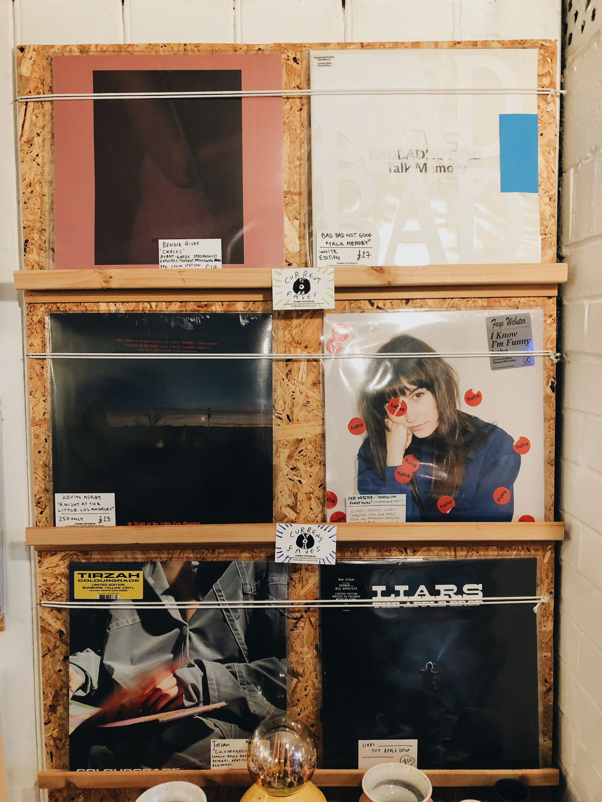
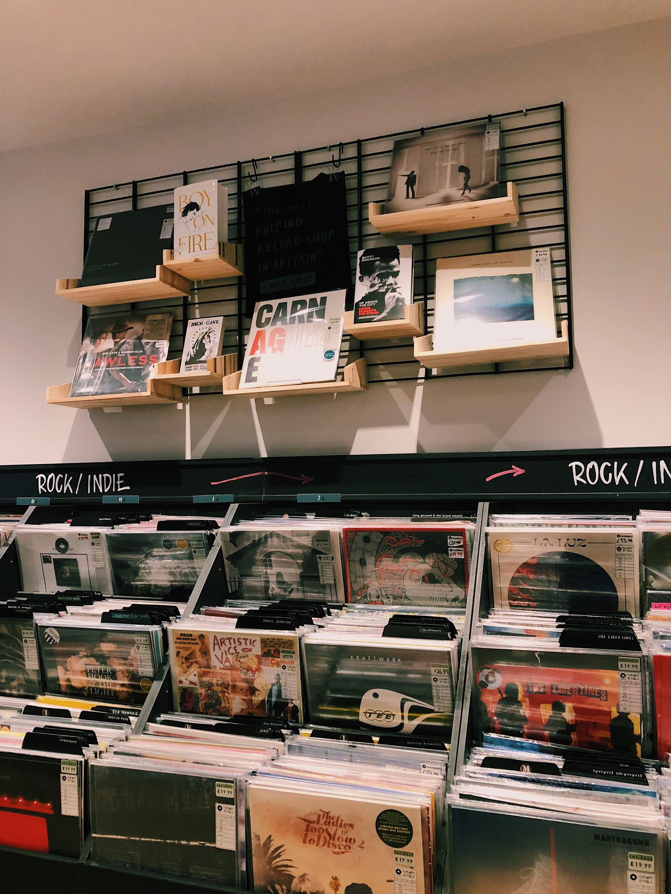

Like any other teenager who grew up listening to music only on CDs, TV or vinyl, my listening habits lean towards the old-fashioned ways, despite having access to the Internet - which one might argue would be more practical. Therefore, it comes as no surprise that I often find myself searching for vinyl records in music stores in hopes that I will find the best album to listen to for the next week. When I combined my fascination for vinyl with my passion for graphic design, I was capable of understanding the artist’s intentions and creative concept for a project. Naturally, I had to share with the world the research I had found in hopes that it would enlighten at least a couple of other music enthusiasts.
I'm Andreea, born and raised in Romania - for the most part - and I'm currently the only one in my family to ever take music seriously. I have learned all I know about music - from genres, artists, and chords to rhythm and influences - from the mighty Internet, as well as friends and, believe it or not, MTV. Although I grew up listening to local musicians, as of late I have been getting into artists from all around the world. I am an avid fan of Harry Styles and Lorde, and sometimes I listen to Run The Jewels to hype myself up. I would say I'm pretty well versed in celebrity culture, and, usually, I know an overwhelming amount about an artist's life and career. I have been getting into photography during the past couple of years, and each time I visit a new record store I tend to capture it in all of its beauty. I try to come upon at least one new artist a week, and -obviously- each time I encounter a new album, I have to analyse and research its cover. Surprisingly, I am still saving up money to purchase a record player - I know, I'm a bit late to the game, but will catch up nonetheless.